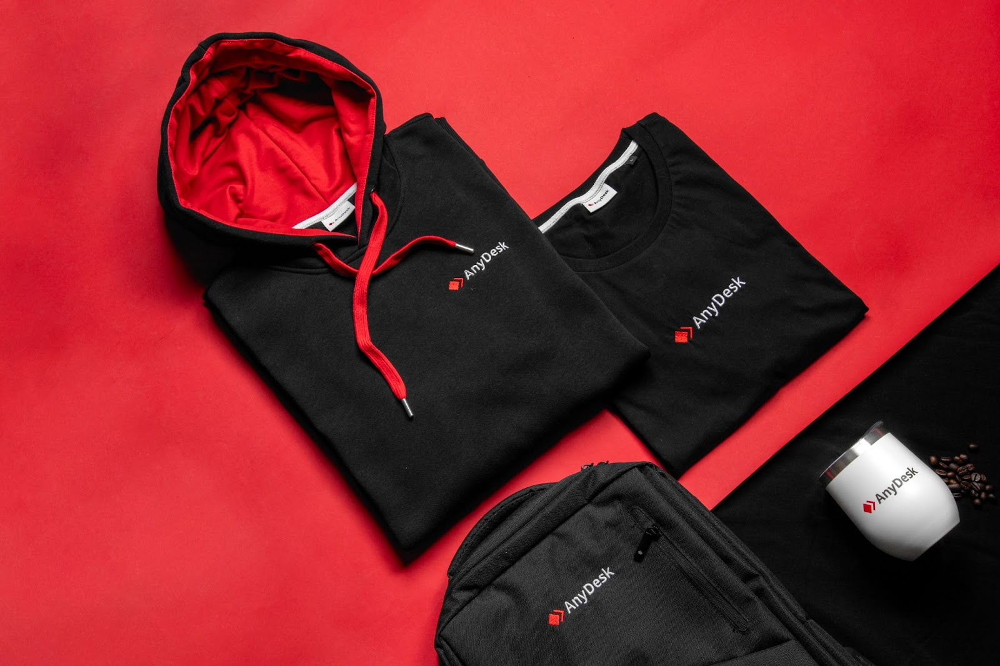
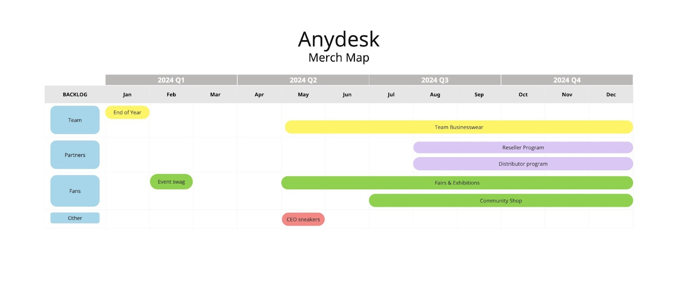

In the competitive world of remote access software, AnyDesk stands out as a fast-growing leader, known for its innovative solutions and global reach. However, the company recognized early on that to sustain its rapid growth and strengthen its market position, it needed more than just a great product. Building strong relationships with its resellers and dealers, who play a critical role in influencing purchasing decisions, became a strategic priority. To achieve this, AnyDesk turned to Sunday to create and execute a comprehensive merchandise strategy designed to transform these key partners into loyal brand ambassadors.

For AnyDesk, the reseller and dealer network is a vital part of its distribution strategy. These partners are often the primary influencers when it comes to recommending software solutions to end-users, especially in markets where direct sales are less prevalent. In a crowded marketplace with numerous competitors, ensuring that these resellers and dealers prefer AnyDesk over other options is crucial. However, fostering this loyalty among hundreds of partners worldwide posed significant challenges:
Influence on decision-making: Resellers and dealers have a strong influence on the purchasing decisions of their clients. AnyDesk needed to ensure that these partners not only knew about their product but actively recommended it over competitors.
Brand ambassadorship: Turning resellers into brand ambassadors who genuinely believe in and promote AnyDesk required more than just product knowledge; it needed a personal connection to the brand.
Scalability: With hundreds of resellers across different regions, AnyDesk needed a scalable solution that could consistently engage partners while also being manageable.
To address these challenges, AnyDesk partnered with Sunday to design and roll out a multi-phase loyalty and activation program centered around strategic merchandise. This program was tailored to gradually build strong relationships with resellers, transforming them from mere distributors into enthusiastic advocates for AnyDesk.

The program began with the distribution of welcome packages to hundreds of resellers worldwide. These packages were carefully curated to include high-quality, branded merchandise that would make a strong first impression. The goal was to introduce resellers to the AnyDesk brand in a way that felt personal and premium, setting the tone for a deeper partnership.
Strategic selection: The merchandise in the welcome packages was chosen to resonate with IT professionals, ensuring it was both useful and desirable.
Global distribution: Sunday managed the complex logistics of shipping these packages to resellers across different regions, ensuring timely delivery and consistency in the experience.
After the initial welcome package, Sunday continued to engage with resellers to gather feedback and ensure they were satisfied with their AnyDesk experience. This step was critical in not only maintaining the relationship but also in understanding how the merchandise and the brand were being perceived by the resellers.
Follow-up communication: Sunday facilitated follow-up communications to check if the resellers had received their packages and to gauge their reactions.
Feedback loops: The insights gathered from these interactions were used to refine the program and ensure it was meeting the needs of the resellers.
The program was designed to be scalable, with the ability to expand and deepen the relationship over time. Resellers were given opportunities to earn more AnyDesk merchandise through their ongoing partnership, turning the merchandise into a tangible reward system that reinforced their loyalty.
Merchandise tiers: As resellers achieved certain milestones or participated in specific activities, they could earn additional branded items, creating a sense of progression and exclusivity.
Ongoing programs: Sunday managed the logistics of these ongoing programs, ensuring that resellers continued to receive merchandise that reinforced their connection to the AnyDesk brand.
Given the scale and complexity of the program, AnyDesk needed a partner who could handle the entire process—from design and production to distribution and feedback collection. Sunday's expertise in executing large-scale merchandise campaigns made them the ideal partner for this initiative.
End-to-end management: Sunday took charge of the entire merchandise process, allowing AnyDesk to focus on its core business while still reaping the benefits of a strategic merchandise program.
Customization and flexibility: Sunday's ability to customize merchandise and adapt to AnyDesk's evolving needs ensured that the program remained relevant and impactful.
While the reseller program was the core focus, AnyDesk also benefited from Sunday's expertise in centralizing their event merchandise. By forecasting annual needs and managing production and distribution, Sunday helped AnyDesk streamline their event operations, ensuring consistent branding and reducing the logistical burden of managing small, fragmented orders.
Global consistency: AnyDesk's presence at global events was enhanced by the consistent, high-quality merchandise provided by Sunday.
Operational efficiency: Centralizing event merchandise reduced costs and simplified logistics, freeing up resources for other strategic initiatives.
The merchandise-driven loyalty program developed by AnyDesk and Sunday has had a significant impact on AnyDesk's relationship with its resellers:
Enhanced loyalty: Resellers who participated in the program became more engaged and committed to promoting AnyDesk's solutions, helping to drive sales and increase market share.
Stronger brand presence: Through the strategic use of merchandise, AnyDesk was able to create a physical presence in the lives of resellers, reinforcing the brand's value and importance.
Scalable solution: The program's design allowed for easy scaling, ensuring that as AnyDesk grows, the loyalty program can grow with it, continuously engaging new resellers and deepening existing relationships.
AnyDesk's partnership with Sunday showcases the power of strategic merchandise in transforming resellers into loyal brand advocates. By focusing on creating meaningful, ongoing relationships through high-quality merchandise, AnyDesk has been able to strengthen its position in a competitive market and ensure that its resellers are not just distributors, but true partners in its success.
As AnyDesk continues to grow, the strategic use of merchandise, expertly managed by Sunday, will remain a key component of their overall strategy, driving loyalty, engagement, and long-term success.
Looking to start dressing your team?
Want to discuss a project? Interested in
visiting one of our offices? Let us know!